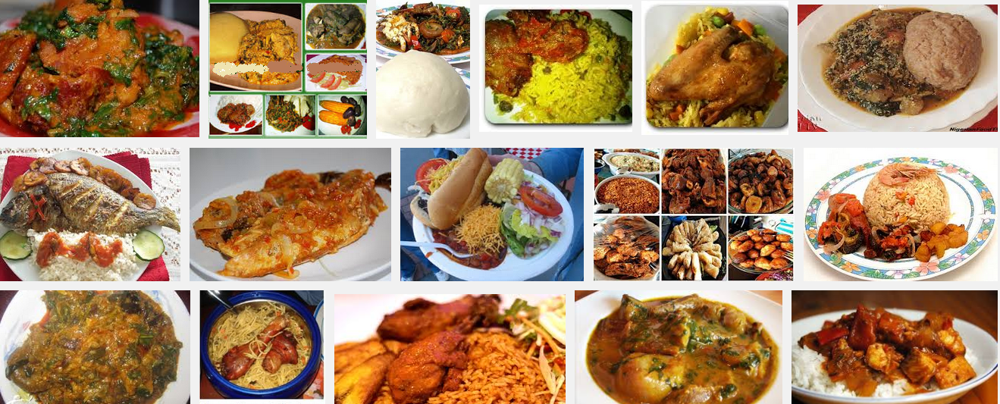

Classic Nigerian dishes recipe
Nigeria is a multi-cultural country and so it has a wide range of foods from its many cultures

heres a recipe for three of Nigeria's classic dishes
pounded yam
jollof rice
stewed beans